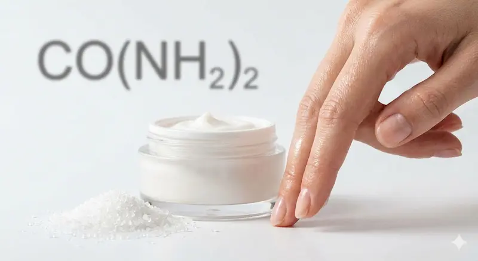
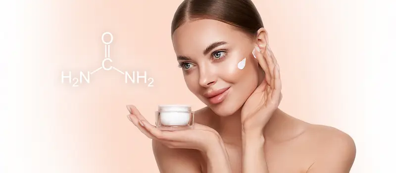
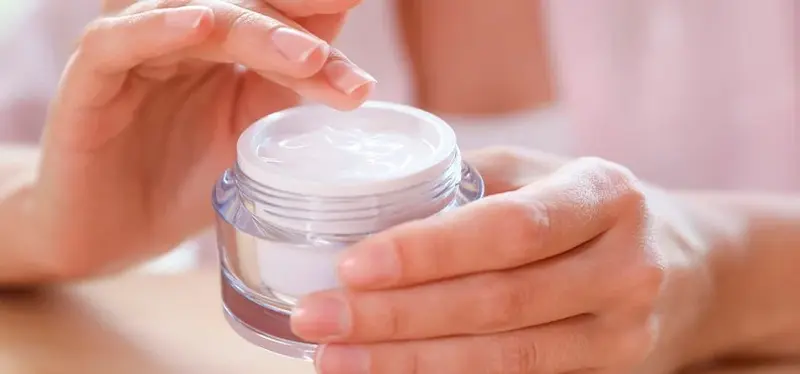

в косметике/urea-title-1200.webp)

Hidratare profundă și reînnoire: secretul pielii fine, chiar și pentru cea mai uscată texturăCe este ureea în cosmetică?
Ureea este un compus organic care se regăsește în mod normal într-o piele sănătoasă. Atunci când nivelul acesteia scade, pielea devine uscată, strânsă și începe să se descuameze. Spre deosebire de uleiuri, ea nu creează doar o peliculă, ci „leagă” literalmente moleculele de apă în interiorul țesuturilor.
Posedă o higroscopicitate ridicată și are capacitatea de a pătrunde prin stratul cornos, îmbunătățind funcțiile de barieră ale pielii și făcând-o mai elastică.

Concentrația contează
Efectul produsului depinde direct de procentul de uree din compoziție:
- Până la 5% (Hidratare)
- Ideal pentru îngrijirea zilnică a feței, menținerea hidratării și a luminozității.
- 5% - 10% (Restaurare)
- Pentru pielea uscată a corpului, eliminarea senzației de strângere și a descuamării ușoare.
- Peste 10% (Keratolitic)
- Înmoaie pielea aspră de pe coate și tălpi, ajută în cazul firelor de păr crescute sub piele.
Ce este ureea (Urea)?
Ureea este un compus organic care face parte din Factorul Natural de Hidratare (NMF) al pielii noastre. Spre deosebire de multe alte componente, aceasta nu creează doar o barieră, ci pătrunde în straturile profunde ale epidermei, reținând moleculele de apă.
În cosmetologie, ureea este apreciată pentru multifuncționalitatea sa: lucrează simultan ca un hidratant puternic și ca un keratolitic, ajutând pielea să rămână moale, netedă și sănătoasă chiar și în condiții de uscăciune extremă.
Diferența dintre concentrația mică și cea mare
- Concentrație mică (până la 5-7%)
- Acționează ca un hidratant profund. Reține umiditatea, elimină senzația de strângere și este ideală pentru îngrijirea zilnică a feței.
- Concentrație mare (de la 10% în sus)
- Are efect keratolitic. Înmoaie straturile cornificate ale pielii, combate eficient hiperkeratoza, bătăturile și firele de păr subpiele.

Cum acționează asupra pielii?
Este ureea potrivită pentru tenul gras și problematic?
Ureea este un component non-comedogenic și este excelent tolerată de tenul gras. Datorită capacității sale de a exfolia blând celulele keratinizate, aceasta previne blocarea porilor (hiperkeratoza foliculară). În concentrații mici (până la 5%), ureea ajută tenul gras să își mențină nivelul de hidratare fără a crea o peliculă lipicioasă sau grasă.
Cui i se potrivește în mod special?
Cine ar trebui să fie precaut?
Important: ureea este un „conductor” puternic. Aceasta intensifică acțiunea altor ingrediente active, de aceea, când utilizați produse cu o concentrație de peste 10%, fiți precauți cu acizii și retinolul.
Există contraindicații?
Ureea este biocompatibilă cu organismul nostru, de aceea alergiile la aceasta sunt extrem de rare. Totuși:
Ce spune știința?
*Bazat pe datele din Journal of Investigative Dermatology și studii clinice asupra componentelor NMF.
Întrebări frecvente despre uree (Urea)
Poate ureea să provoace senzație de arsură?
Da, o ușoară furnicătura la aplicarea produselor cu concentrație mare (peste 10%) este o reacție normală, în special pe pielea foarte uscată sau deteriorată. Totuși, dacă apare o iritație severă, produsul trebuie clătit.
Este ureea sigură pentru față?
Pentru față, concentrațiile de până la 5% sunt ideale. Acestea asigură o hidratare profundă fără risc de iritare. Produsele cu 10% sau mai mult sunt, de obicei, destinate corpului, tălpilor și coatelor.
Ajută ureea în cazul „pielii de găină” (hiperkeratoza foliculară)?
Da, este unul dintre cele mai eficiente ingrediente pentru combaterea acestei probleme. Datorită acțiunii keratolitice, aceasta înmoaie dopurile din pori și redă pielii o textură perfect netedă.
Este ureea din cosmetice naturală?
În cosmetica modernă se utilizează uree sintetică (carbamidă). Aceasta este identică cu cea regăsită în pielea noastră, dar este complet sterilă și sigură pentru utilizare.
Poate fi folosită ureea în timpul verii?
Da, ureea nu crește fotosensibilitatea pielii. Dimpotrivă, ajută la restabilirea echilibrului hidric după expunerea la soare sau la apa sărată de mare.
Împărtășește experiența ta
Părerea ta îi ajută pe alții să înțeleagă dacă acest ingredient li se potrivește. Chiar și 1–2 fraze sunt utile
Nu știți ce să scrieți? Selectați opțiunile — textul se va genera automat
Publicăm doar recenzii reale. Reclama și linkurile nu trec de moderare
Prin trimiterea comentariului, sunteți de acord cu Politica de confidențialitate.